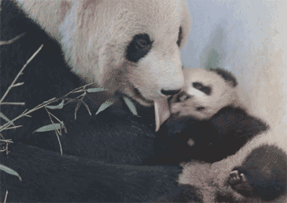
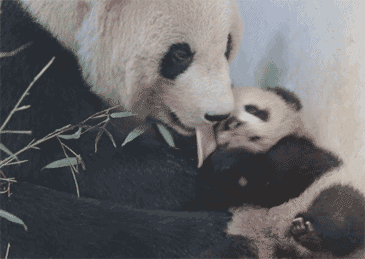

introduce
Giant pandas: The only mammals belonging to the order Carnivora, Panda Family, Panda Subfamily and Panda Genus. Their heads and bodies are 1.2-1.8 meters long and their tails are 10-12 centimeters long. It weighs 80-120 kg, weighs up to 180 kg, and is black and white. It has round cheeks, big black circles, chubby body, symbolic eight-character walking style, and sharp claws like an autopsy knife. It is the most lovely animal in the world.
Giant pandas have lived on the earth for at least 8 million years. They are known as "living fossils" and "national treasures of China". They are the image ambassadors of WWF and the flagship species of biodiversity conservation in the world. According to the third national panda field population survey, there are less than 1600 wild pandas in the world, which belong to the first-class protected animals in China. As of October 2011, the number of captive giant pandas in China was 333. Giant pandas eat meat at first. After evolution, 99% of their food is bamboo, but their teeth and digestive tract remain intact. They are still categorized as carnivores, and are as dangerous as other bear species when angry. The life span of giant pandas in the wild ranges from 18 to 20 years, and can exceed 30 years in captivity.
By November 2018, the number of captive giant pandas had reached a new high, reaching 548 in the world.
Giant pandas are endemic to China, and their main habitats are the mountains of Sichuan, Shaanxi and Gansu provinces.
Giant pandas have lived on the earth for at least 8 million years. They are known as "living fossils" and "national treasures of China". They are the image ambassadors of WWF and the flagship species of biodiversity conservation in the world. According to the third national panda field population survey, there are less than 1600 wild pandas in the world, which belong to the first-class protected animals in China. As of October 2011, the number of captive giant pandas in China was 333. Giant pandas eat meat at first. After evolution, 99% of their food is bamboo, but their teeth and digestive tract remain intact. They are still categorized as carnivores, and are as dangerous as other bear species when angry. The life span of giant pandas in the wild ranges from 18 to 20 years, and can exceed 30 years in captivity.
By November 2018, the number of captive giant pandas had reached a new high, reaching 548 in the world.
Giant pandas are endemic to China, and their main habitats are the mountains of Sichuan, Shaanxi and Gansu provinces.
 
